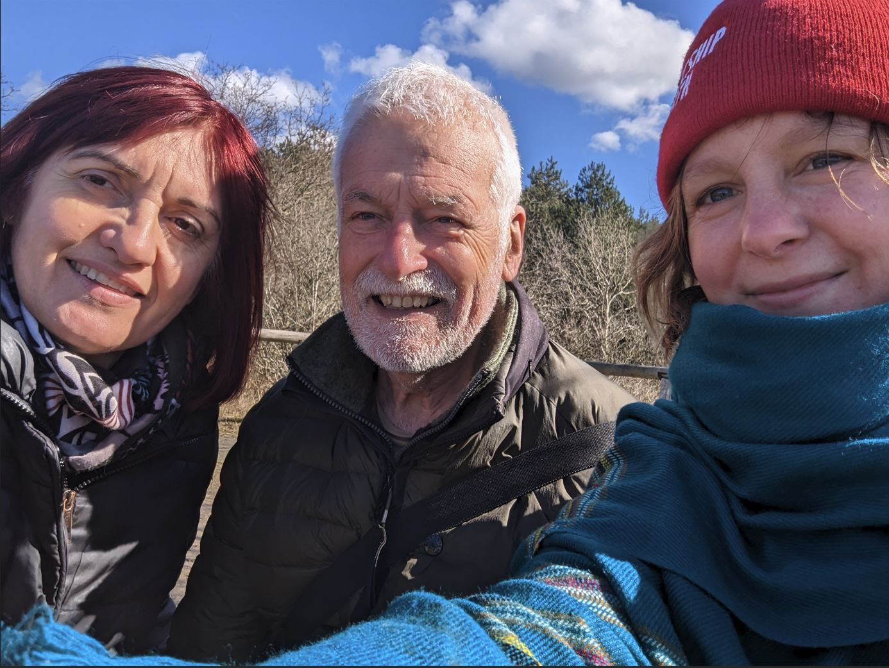

.
| Event | Location | Dates | Note |
|---|
| DEB 2025 tele-course, School & Symposium |
One line & Iraklion, Crete, Greece |
2025/02/14 - 03/28 (online course); 2025/05/26 - 06/03 (practical course); 2025/06/04 - 06 (symposium) |
9th Internat. Symposium
on DEB theory preceeded by a two part training event (free online course and
8-d practical course in person).
|
| Add-my-pet curator workshop V |
Zagreb, Croatia |
2025/02/2 - 08 |
Developments in AmP, symposium and preparation for DEB2025
|
| DEB 2023 tele-course, School & Symposium |
One line & Baton Rouge, Lousiana, USA |
2023/03/23 - 05/04 (online course); 2023/06/05 - 13 (practical course); 2023/06/14 - 16 (symposium) |
8th Internat. Symposium
on DEB theory preceeded by a two part training event (free online course and
8-d practical course in person).
142 participarts enrolled for online-course, 27 for school (excluding 13 assistants)


|
| Add-my-pet curator workshop IV |
Voorschoten, the Netherlands |
2023/02/28 - 03/23 & 2023/04/27 - 05/09 |

 Developments in AmP and preparation for DEB2023
Developments in AmP and preparation for DEB2023 |
| DEB 2021 tele-course, School & Symposium |
Online (due to COVID) |
2021/03/04 - 04/22 & 05/17 - 22 |
7th international symposium on DEB theory: 2021/05/24 - 28
Online with daily live zoom sessions 15:00 and 18:00 GMT (London time) |
| Ecotox (GUTS)focused training courses at SETAC Europe |
Dublin, Ireland |
2020/05/03 - 07 |
A course on the openGUTS software by Tjalling Jager and Roman Ashauer -
an afternoon's hands-on course for using the software, with very limited attention to the backgrounds of the GUTS model itself.
This course is now available for everyone via Leanpub.
TC01 - GUTS Modelling:
From the Theory to the Practice (3rd May).
A full-day training course organized by Sandrine Charles.
Details on the course can be found here. (Practical: R software and MOSAIC web platform) |
| debX 2020 |
Online |
2020/02/17 - 03/23 |
A 5-week course (MOOC) providing a framework for modelling metabolism at the organism level, covering the full life-cycle,
using the Dynamic Energy Budget (DEB) Theory.
A free online course about DEB theory that has been running for 4 years.
This year it will have new French subtitles thanks to the LEMAR group in Brest |
| Preditox 2020 - Ecotoxicology and Predictive Modelling |
Lyon, France |
2020/01/06 - 10 |
(Ecotox) Winter school covering the following topics: Introduction to R software,
Dose-response and TKTD modeling, Distribution fitting, Bayesian inference
|
| DEB session/symposium at the ISEM conference |
Salzburg, Austria |
2019/10/01 - 05 |
Dynamic energy budgets are one of the main topics on the International Society for Ecological Modelling conference.
Abstract submission deadline 26th April. |
| Ecological applications of DEB at the Biomathematics ESMTB Summer School 2019 - Modelling in Marine Ecology |
Sicily, Italy |
2019/09/8 - 21 |
The school aims to cover several themes on modelling in marine ecology and provide several courses within each theme.
Five diverse themes were negotiated, with some of them having as many as five courses.
Among modelling strategies, frameworks, and concepts, DEB theory and DEB-based models are presented and applied |
| DEB2019: Practical course, Workshop & Symposium |
Brest, France |
2019/04/1 - 6 & 8-9 & 10 - 12 |
DEB School practical course (a continuation of the tele-course, including practical exercises).
The course is followed by 2-day DEB workshops, and the 6th international symposium!
Application for the school and abstract submission are open (deadline October 20th) |
| DEB2019: Tele-course |
Online |
2019/01/24 - 02/28 |
10th edition of the DEB tele-course: general theoretical part.
Focus is on chapters 1-4 of the DEB3-book, which deal with the principles of the theory and (the simplest) univariate DEB models |
| Add-my-pet curator workshop III |
Voorschoten, the Netherlands |
2018/08/13-20 |
 Developments in AmP
Developments in AmP |
| debX 2018 |
Online |
2018/02/19 - 03/26 |
A 5-week course (MOOC) providing a framework for modelling metabolism at the organism level,
covering the full life-cycle, using the Dynamic Energy Budget (DEB) Theory |
| DEB2017 tele-course &
School &
5th International DEB Symposium |
Tromsø, Norway |
2017/05/21 - 30 & 05/31 - 06/02 |
Continuation of the DEB Tele-course.
The focus of the practical course is mastering the skills involved in the interface between the empirical world and mathematics.
The course is followed by the symposium covering advances in research and developments of DEB theory in the context of ecosystem
based approaches to managing resources.
(Akvaplan-niva AS) |
| debX micro |
Online |
2017/05/12 - 25 |
A framework for modelling metabolism for microorganisms using the Dynamic Energy Budget (DEB) Theory is provided in this course |
| 9th DEB Tele-course 2017 |
Online |
2017/03/02 - 04/06 |
The tele-course focuses on chapters 1-4 of the DEB-book, which deals with the principles of the theory and with univariate DEB models.
(Akvaplan-niva AS) |
| Add-my-pet curator workshop II |
Voorschoten, the Netherlands |
2017/01/23 - 27 |
Developments in AmP/ DEB course and symposium 2017 |
| MEMS Summer School |
Brest, France |
2016/08/29 - 09/02 |
"Combining Modeling and Experimental Approaches for Marine organisms under Stress" |
| TKTD summerschool 'DynModTox' 2016 |
Holbæk, Denmark |
2016/08/09 - 17 |
Learning the basics of toxicokinetic and toxicodynamic modelling, how they can be linked and how to analyse
and interpret body residue and toxicity data on a mechanistic basis.
The course follows the same format as in 2014, but with more freedom in the group projects
Impressions |
| Add-my-pet curator workshop I |
Voorschoten, the Netherlands |
2016/06/25 - 07/02 |
 Developments in add-my-pet/ DEB course 2017
Developments in add-my-pet/ DEB course 2017 |
| Effective Strategic Renewal workshop |
Copenhagen Business School, Copenhagen Denmark |
2016/06/22 |
Study of applicability of DEB theory in Economics |
| Eco(toxi)cology tool for produced water workshop |
Statoil, Trondheim, Norway |
2016/03/03 - 04 |
Improving risk assessment for produced water in the Bering Sea using DEB theory |
| TKTD summerschool 'DynModTox' 2014 |
Roskilde, Denmark |
2016/08/05 - 13 |
Focus on (basic) toxicokinetics and toxicodynamic modelling (sub-lethal effects) using DEB theory in the form of the simplified DEBkiss model.
Use of OpenModel next to Matlab. Impressions |
| DEB2015 course and Symposium |
Online and Marseille, France |
2015/02/19 - 03/26 & 04/20-30 |
8th DEB Tele-course (19 Feb - 26 Mar):
general theoretical part (5 weeks part-time) in tele-mode (at your working place)
Participants;
practical training part (20 Apr - 27 Apr):
7 days in class-room mode in the CIRM (Centre for International Meetings in Mathematics) in campus Luminy, Marseille (France);
4th Symposium on DEB theory (28 Apr - 30 Apr): at campus Luminy, Marseille (France).
DEB 2015 is organised conjointly by the CIRM, the Mediterranean Institute of Oceanography (MIO) and the Institute Pytheas (OSU).
These are components of Aix-Marseille University (AMU) |
| Multispecies parameter estimation workshop |
LEMAR, Brest, France |
2015/09/07 - 08 |
Introduction to multispecies DEB parameter estimation |
| PhD course on Theoretical Ecology |
Amsterdam |
2015/02/02 |
4 lectures on DEB theory for metabolic metabolic organisation at VU University |
| DEB2013 course and Symposium |
Online and NIOZ, Texel, Netherlands |
2013/02 - 03 & 04/15 - 26 |
7th DEB Tele-course (Feb - Mar): general theoretical part in tele-mode Participants;
practical training part (15 Apr - 23 Apr) in class-room mode in the Royal Netherlands Institute for Sea Research (NIOZ), Texel (Netherlands).
3rd Symposium on DEB theory (24 Apr - 26 Apr) at NIOZ
|
| TKTD summerschool 'DynModTox' 2012 |
Holbæk, Denmark |
2012/08/11 - 18 |
Learning the basics of toxicokinetic and toxicodynamic modelling, how they can be linked and how to analyse and interpret body residue
and toxicity data on a mechanistic basis. TKTD modelling in general, and GUTS and DEBtox in particular. Impressions |
| Workshop on DEB theory |
Melbourne, Australia |
2012/08/06 - 07 |
Lecture series, discussion sessions, school |
| PhD course on Theoretical Ecology |
Amsterdam |
2012/01/16 |
4 lectures on DEB theory for metabolic metabolic organisation at VU University |
| Summer course |
Wimereux |
2011/05/10 - 06/14 |
Station Marine de Wimereux, Univ. du Littoral cote d'Opale:
Lectures on metabolic organisation and evolutionary aspects |
| DEB2011 course and Symposium |
Online and Lisbon, Portugal |
2011/02-03 & 04/04-15 |
 6th DEB Tele-course (Feb - Mar): general theoretical part in tele-mode. Participants.;
practical training part (04 Apr - 12 Apr): in class-room mode at the Instituto Superior Técnico (T&eactute;cnico Lisboa), Lisbon (Portugal).
Most participants.; 2nd Symposium on DEB theory (13 - 15 Apr) at Técnico Lisboa in Lisbon.
6th DEB Tele-course (Feb - Mar): general theoretical part in tele-mode. Participants.;
practical training part (04 Apr - 12 Apr): in class-room mode at the Instituto Superior Técnico (T&eactute;cnico Lisboa), Lisbon (Portugal).
Most participants.; 2nd Symposium on DEB theory (13 - 15 Apr) at Técnico Lisboa in Lisbon. |
| 7th AQUAdeb meeting |
Nantes |
2010/04/27 |
Upcomming events in DEB research |
| PhD course on Theoretical Ecology |
Amsterdam |
2010/01/11 |
4 lectures on DEB theory for metabolic metabolic organisation at VU University |
| 6th AQUAdeb meeting |
Nantes |
2009/11/05 |
Upcomming events in DEB research |
| DEB2009 course and 1st Symposium |
Online and Brest, France |
2009/02/12 - 03/19 & 09/17 - 10/22 & 04/19 - 23 |
5th DEB Tele-course in tele-mode: 02/02: plenary introductory program about chap 1-5 of the DEB book,
and 09/10: advanced parallel program with selected topics related to the various symposium sessions.
Practical training part (04): course and discussion day in Brest, France;
1st Symposium on DEB theory DEB Theory: 30 years of research for metabolic organization |
| 5th AQUAdeb meeting |
Nantes |
2008/10/28 |
3rd edition of DEB book and its maintenance |
| 4th AQUAdeb meeting |
Nantes |
2008/04/24 |
Isotope dynamics |
| PhD course in Theoretical Ecology |
Amsterdam |
2008/01/07 |
4 lectures on metabolic organisation at VU University |
| 3rd Workshop on DEB theory applications in marine systems |
Marseille |
2007/12/20 |
University of the Mediterranee |
| 3rd AQUAdeb meeting |
Rennes |
2007/12/18 |
Agrocampus |
| 2nd AQUAdeb meeting |
Nantes |
2007/04/25 |
Ifremer, estimation of DEB parameters |
| DEB2007 tele course |
Online |
2007/02 - 03 |
4th DEB Tele-course in tele-mode |
| 2nd Workshop on DEB theory applications in marine systems |
Marseille |
2007/01/17 - 18 |
Centre d'Oceanologie de Marseille Laboratoire de Microbiologie, de Geochimie et d'Ecologie Marines, Marseille |
| 1st AQUAdeb meeting |
Nantes |
2006/10/30 |
Ifremer, estimation of DEB parameters |
| 1st Workshop on DEB theory applications in marine systems |
Marseille |
2005/12/12 - 14 |
Centre d'Oceanologie de Marseille Laboratoire de Microbiologie, de Geochimie et d'Ecologie Marines, Marseille |
| PhD course in Theoretical Ecology |
Amsterdam |
2005/12/05 |
4 lectures on DEB theory at VU University Amsterdam |
| DEB2005 tele course |
Online |
2005/02 - 03 |
3th DEB Tele-course in tele-mode |
| ESMTB Summerschool |
Seqüenza, Spain |
2003/08/25 - 09/03 |
Scales in Mathematical and Theoretical Ecology From Individuals to Ecosystems
|
| DEB2003 tele course |
Online |
2003/02 - 03 |
2nd DEB Tele-course in tele-mode |
| DEB2001 tele course |
Online |
2001/02 - 01 |
 1st DEB Tele-course in tele-mode
1st DEB Tele-course in tele-mode |
| DEB course |
Berlin, Germany |
2000/02/17 |
6-lecture course at Humboldt University |
| DEB course |
Woutschoten, the Netherlands |
2000/01/06 |
5 lectures at 3rd winterschool on pupulation dynamics |